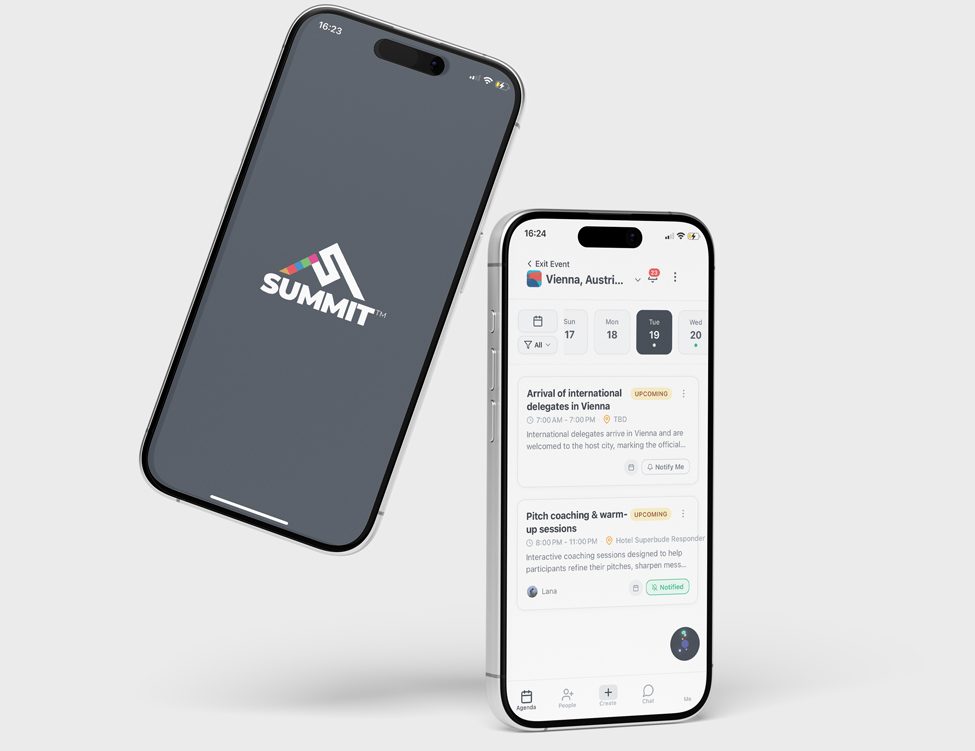
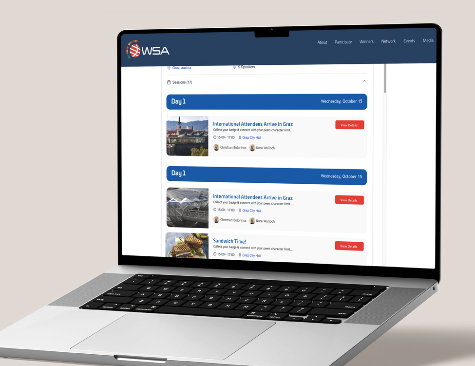
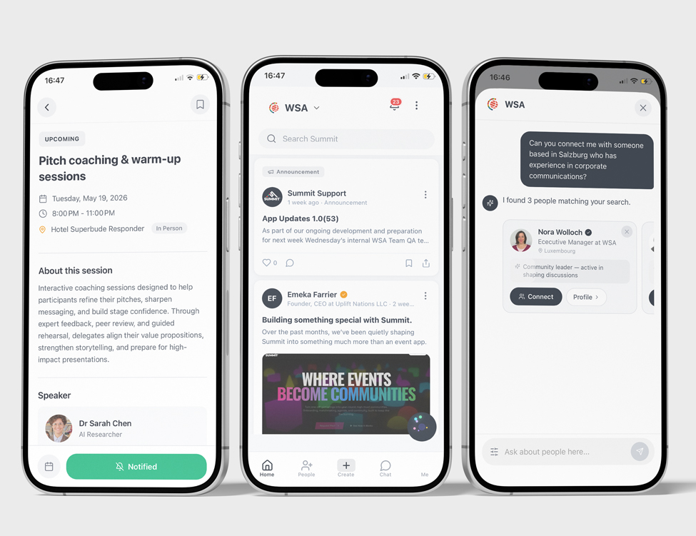
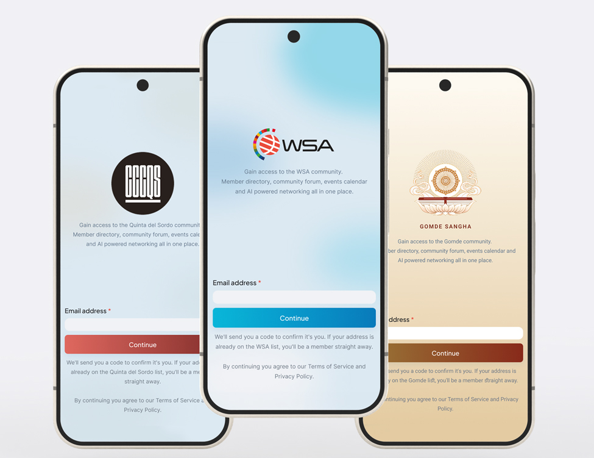

60% attendee adoptionEngagement up to 2 months post-eventWhite-label app
Post-event interviews kept surfacing the same three pains: unnavigable PDF calendars, inefficient networking, and a community that fragmented after every event. The Summit App fixed all three. Over 60% of attendees used it, and it continues getting engagement up to two months after events.

Context
WSA is a UN-backed organization that gives awards to projects supporting the UN Sustainable Development Goals. Several times a year, they host regional and global events to celebrate award winners and provide valuable networking opportunities for attendees. I was in charge of the WSA website (there is another case study about that). To make the website more helpful, I often followed up with 5–10 people I had met at each event. I asked them what they were hoping to get out of the event and what could be improved.
Problem
In these interviews several recurring themes came up over and over again. One was that the calendar (a PDF sent through a WhatsApp group) was hard to navigate. Another was the inefficiency of the networking. A person working in agritech in Japan had very little to say to someone working in fintech in Chile. Also, the jumble of emails and LinkedIn connections attendees ended up with was often difficult to sort through and follow up on. The WSA community would come together for these events, but would mostly fragment again immediately afterwards.
What I did
My first impulse was to address these issues through the website. I built several MVPs, including an AI agent that had access to attendee and project data and suggested connections aligned with each user’s goals. These solutions received mostly positive feedback but were clunky and often drowned out by other communication channels. I also evaluated several SaaS solutions. While many solved the calendar problem, none effectively improved networking or helped maintain community engagement after the event. I considered building a custom app, but WSA did not have an in-house mobile developer or the budget to hire an agency.
Team and constraints
Summit was built by two people for one very clear stakeholder. Emeka, a developer I met through the WSA community, built the app and worked partly for equity. Making it white-label, so it could serve clients beyond WSA, was his idea, and it’s the reason Summit is an independent product today. Peter Bruck, WSA’s Chairman, was only interested in an app if it kept people engaged between events and strengthened what WSA really offers its members: network capital. That set the bar for every decision. A better calendar alone wouldn’t meet it, so the calendar was only the first iteration. The second focused on projects, the community feed and connections.

Explore it on the Summit website.
The first iteration of the app focused solely on calendar functionality. It provided a clear schedule of all sessions, allowed users to sync events with their personal calendars (iCal, Outlook, or Google), view session locations via Google Maps or Apple Maps, and access speaker profiles and LinkedIn pages. The app was embedded within the website so that users who preferred not to download an app could still access the schedule. This successfully solved the calendar problem but did not yet address networking. However, it helped onboard users, which made later iterations easier to roll out.
The second iteration retained the calendar and introduced two new sections: Projects and Community Feed. The Projects section displayed profiles of all winning teams, their objectives, and their social links, allowing attendees to follow up after the event. The Community Feed functioned as a forum where participants could post what they were looking for (investors, employees, or partnerships) and discover others with similar goals. The app also allowed users to browse attendee profiles and identify who might be most relevant to connect with.
The app also featured an AI agent that could provide information about winners, the agenda, and attendees. This agent supported networking during the event by suggesting people to connect with based on each user’s expertise and objectives. It also helped attendees use their time more efficiently by recommending the most relevant sessions.

One of the big problems that we anticipated with the app was it getting spammed once it got in the wrong hands. We solved this in the onboarding flow. When users were creating an account they are asked for their email. This is standard practice, for the email confirmation, but we also used this step to check against an admins email list. Admins could upload CSVs of their mailing list, which would serve as the list of approved emails. If the email was on the admin list, the user would be given full access to the app. If they weren't they were given guest access, which didn't let them post to the forum or access the directory of other guests. They could also get full access by getting an invite code (these were given out on email marketing campaigns or displayed on QR codes at events), but would expire after an allotted time.
Since the app was white-label, we had to separate which parts of the branding were customizeable (the colors, fonts, logo, and some of the wording, and features that could be turned on or off) from the parts that weren't (the glassy textures, the gradients, and the basic functionality). This meant the design library had to be built in a very specific way to accomodate these kinds of changes, and the code had to be treated similarly, with one file being customizeable, so as to be able to change the appearance entirely when switched out.

Results
60%attendee adoption
After two events the data was clear: over 60% of attendees engaged with the app, and it continues getting engagement up to two months after events, implying real follow-ups.
That second number is the one Peter cared about: people were still using the app to follow up long after the event ended.
Summit has since spun out of WSA and now operates as an independent product, serving clients with no connection to the organisation it was originally built for — among them Gomde and Quinta del Sordo.
Related WSA work
This grew out of a wider remit at WSA that also covered the website and the identity for their flagship event.
See the WSA Country Pages case study →
See the WSA Global Congress Branding case study →